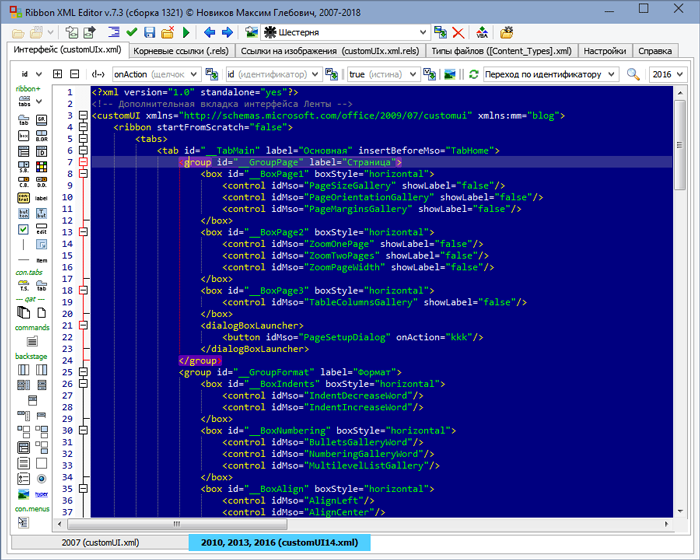

|
Ribbon XML Editor |
Автор: Новиков Максим Глебович |
Низкоуровневый XML-редактор интерфейса Microsoft Office Fluent UI.
Поддерживает Microsoft Office 2007-2016.
Протестирован в Windows XP (32 bit), Windows Vista (64 bit),
Windows 7 (64 bit), Windows 8.1 (64 bit), Windows 10 (64 bit).
Внимание! Программа Ribbon XML Editor не требует установки. Просто распакуйте её бесплатными архиваторами 7-zip (http://www.7-zip.org/) или PeaZip (http://alpinefile.ru/peazip.html).
Не пугайтесь срабатывания некоторых экзотических антивирусов. Это ложное срабатывание, в чём можно убедиться на сайте https://www.virustotal.com, посмотрев на результат проверки наиболее мощными антивирусами (например, такими, как ESET-NOD32, Kaspersky и т.п.)
Если при открытии документа Access брандмауэр Windows запросит подтверждения функций связи для сервера, разрешите их. Доступ к базам данных Access производится 32-битным или 64-битным (в зависимости от местных драйверов и формата базы данных) локальным сервером, связь с которым программа осуществляет по сетевому протоколу TCP.
Если Вам понравилась моя программа, буду очень рад Вашему поощрению, отправленному на любой из моих кошельков: Яндекс.Деньги или WebMoney, или популяризации её в сети.
|
|
Версия 7.3 |
Скачать Ribbon XML Editor версии 7.3 (сборка 1321) — 7.92 МБ
Скачано 3429 раз
Скачать дополнительные темы для Ribbon XML Editor — 8.11 Мб
Скачано 729 раз
Низкоуровневый XML-редактор пользовательского интерфейса Fluent UI для MS Office версий 2007+. Позволяет редактировать ленточный интерфейс основных приложений MS Office. Имеет функцию экспорта и импорта кода интерфейса через файл настроек ленты, поддерживающийся с 2010-й версии офиса. Поддерживает внедрение интерфейса в любые документы или шаблоны Word, Excel, PowerPoint и Access (форматы docm, docx, dotm, dotx, xlsm, xlsx, xlsb, xltm, xltx, xlam, pptm, pptx, potm, potx, ppsm, ppsx, ppam, thmx, accdb, accde, accdr и accdt).
Уроки по изменению интерфейса: http://fluentui.blogspot.ru/
Полезность программы:
Интерфейс Microsoft Office 2007, в котором впервые появилась лента, вообще не обладал возможностью высокоуровневой пользовательской настройки. В Microsoft Office, начиная с версии 2010, этот недостаток был частично исправлен; тем не менее, реализованные в нём высокоуровневые средства конфигурирования не всегда позволяли добиться желаемого. Так, к примеру, для добавленной вкладки и группы нельзя определить динамические атрибуты; нельзя группировать элементы при помощи box; на вкладке можно разместить только стандартные элементы либо кнопки запуска макросов; нельзя сохранить настроенный интерфейс внутри шаблона, документа или надстройки.
Работая в Ribbon XML Editor, вы не только можете легко создать интерфейс любой сложности (благодаря, в том числе, контекстно-чувствительной функции автодополнения), но и полностью контролируете этот процесс на уровне XML-кода. Кроме того, на основе построенной разметки интерфейса и использованных в ней имён функций обратного вызова, редактор может сгенерировать шаблоны этих функций в виде отдельного модуля для дальнейшего подключения его к документу через редактор макросов Microsoft Visual Basic, открывающийся из приложений Word, Excel, PowerPoint или Access по Alt+F11.
Краткое описание:
Низкоуровневый — это, конечно же, не означает, что он хакерскими методами правит «экзешники». В то же время построение интерфейса идёт без использования высокоуровневых инструментов самого приложения Microsoft Office. Редактор Ribbon XML Editor позволяет напрямую работать с XML-кодом, на котором базируется пользовательский интерфейс.

Основные возможности RibbonXMLEditor:
Редактор имеет много полезных функций, таких как:
Удобство работы с редактором обеспечивается следующими свойствами редактора:
Благодарности
Выражаю особую благодарность Евгению Маркову и Александру Витеру за их активное участие в тестировании программы, а также за многочисленные предложения по её улучшению. Также выражаю благодарность всем, кто своевременно сообщал мне о замеченных ошибках, а также оставлял пожелания по наращиванию функционала.